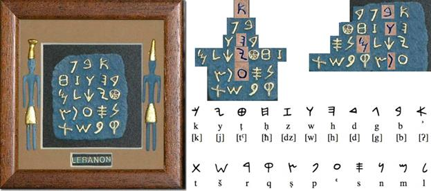

ᛖ ᛗ ᛚ ᛜ
e m l ŋ
Is another case of M before L. So I know only two such cases.
------
So called futhark could be another alphabetic arrangement of letters:
ᚠ is F, but ᚨ is A, and in "anglo-saxon futhorc" ᚪ a, ᚫ æ, ᚩ o
ᚨ stands in fourth position, where vowel is in bornholm alphabet.
(ᚩ (o) in anglosaxon futhork stands there)
ᚦ stands in third position, as in bornholm alphabet.
ᚢ is labial as ᛒ (both are in second position)
ᚱ is graphically closest to ᛒ and one often look like the other.
ᚲ stands after that ᛒ as it's supposed to
ᚷ as it's invariant. or is it staveless ᛡ standing exactly in the 7th position?
ᚹᚻᚾ which follow that ᚷ appeal to ionic vocalization of H, because ᚹ is labial (a labial half of ᛒ undistinguishable from ᚦ on a common staff. Is it Ѳ we cannot figure out whether it's t of f?
ᛁᛃᛇ claster remind that in IJ or even HIJ, and the ᚻ from a few lines above has another form: ᚺ so where does this claster begin I'm not sure.
after this vowel claster comes labial ᛈ
The same structure, but different transliteration of letters. Could they stay vowels, but drift as they did in english, where I inscribes no A but pronounces it as AI is I = Z? as it is in some ancient scripts, as I is az in old russian, and literally the first letter, as I is in roman numerals. Could this order be twisted because lines came in different planks? or even in dice, where nobody knows which one is the first one. so some dies had more zeros than the others.
ᛉ that follows is either part of the following sequence of linguals or an invariant of labial ᛈ as M, shaky table, a bed. zie or ma? ma as female denominative (mama, manda, man is "not ma" or "belonging to ma"? - жена "принадлежит je" or "isn't je" je is male form of this personal pronoun and me is female one? )
and on it goes as in bornholm alphabet:
ᛊ=ᛋ, ᛏ
and after ᛏ, ᛒ follows, as ᚢ does in bornholm alphabet.
thus ᛒ & ᛏ stand together.
ᛖ is supposed to stand for E, which makes this form be three mothers: it is labial M in our script, it is lingual Ϻ in old greek, though it's hard for me to buy it, because their M looked just the same. l & I also look the same, but wtf! now, with ᛖ this form takes all three forms. and it has pikes on its head, just like this tridevi:.. I wanted to bring a picture of Hecate, but I found something better: I have no idea how correct the info there is, but somebody did a great job collecting it there, so you better check it out yourself: https://en.wikipedia.org/wiki/Triple_deity
and after that vowel ᛖ goes labial ᛗ (and since it's their final line, it reminds me of invariants of U V
and after that ᛗ [M] follows those ᛚ & ᛜ of L & N. N also looks like Ѵ(ѵ) in greek, and ѵ used to be final in old russia alphabet - couldn't it be caused by some cultural references (as of V reflecting A for example)
and sometimes ᛟᛞ follow, though ᛞ is believed to be double form of ᚦ and ᛟ could be borrowed from Ω
But here's some other form of futhark:

As you can see, I wasn't wrong about ᛡ
and another one:
and look how here it is futhark, but it is the first 7 letters of the bornholm alphabet:

ᚠ literally looks like ᚨ

ᚢ looks more like n (ᚿ).
or like b in ogham.
then ᚦ stands where it had to.
then some vowel, looking like E
and it was supposed to be E
oficially it's whether a or o
what follows is supposed to be ᚱ
and though ᚱ is often written like that
it looks more like ᚢ
but in the previous analysis I saw ᛒ
ᚱ is graphically between ᛒ & ᚢ
and their form correlate with sounds
vowel ᚢ, labial ᛒ, lingual ᚱ
another representation of three ladies.
My name is Deemeetree, they say it's devoted to Demetra. But it's literally 3
Dame3. tra as female form of tri.
You know female deity is triple.
and the fourth mother is hidden.
as the fourth ball in pyramid of four.
And how are 2nd and 5th letters are different? They look exactly the same. No, sometimes second is higher. but sometimes it is not. Is it just names of the
days of the week? as if tuesday and thursday
were given in the same letter.
Some runologist educate me please,
I cannot specialize in all of it.
A couple of words of ogham, as soon as it's here:
It's also named beth luis nun or beth luis noin
But the third letter is f - was it placed there to reflect t?
c reflects s in k-symmetry also.
Sequence M G Ng reminds futharkic one: M L Ng
G & L are almost invariants, so often they look alike: whether as < & ^
or as ג & λ - in lowercase cursive l is also bigger than c
So if we переставим L & G, we'll have ogham beginning with BG which follows BC & B is the first letter again. The holy book of alphabet had b as the first letter. Remeber those runic poems, when each line begins with the next level according to alphabetic (or futharkic) sequence. The resemblance of alphabetic & futhark structures (where even direct correlation happens on the 3rd position and directly repeats at 6th, which alone is well out of probability theory. And those correlation keep on coming from all the ways, which I think I demonstrated) could be caused by some royal poet changing the meaning & sound of those lines. That's why such a diverse tradition can be found in the kingdom of runic scripts, where one sound goes in different visions & same visions go for different sounds, or it could be caused by secrecy, which is comical, since many of their neighbours had writings, yeah, but then we had some special writing system, even if based on the same principles, and maybe even on the same magic, but made in our own language & in our own manner. Not only musical mode was different, but graphic was taken from national signs: tamgas could be the source of recognizable graphs, where you know where's eagle, where's snake (3 birds & 3 animals & 3 parts of the body & 3 fractions of circle & 3 other things egyptian alphabet is having. their writing system have more beasts, but only as ideograms.)
Let's collect some more futhark canons allegedly from artifacts and ponder on them some more:
Notice, that in both two cases where ᛉ is present it is considered to be R/z, not M.
Could this decipherment or actual case be influenced by hungarian
Because in alphabetic sequences ᛉ's definitely M.
Let's compare these 3 aetts to Bureus'ы 3 dice:

It seems that division into aettir is much less important than the sequence itself, which could be unnoticed if we compared them without this page from Bureus.
Though even comparing the other two many interesting things can be observed, I leave them to you.
See that Bureus recognizes ᛉ as M
But we noticed before, that dice are arranged alphabetically, but it goes dice by dice in rows:
All ᛁ's are collected in the middle die: ᚴ ᚼ ᚾ ᛁ ᛅ where ᛅ is ᛆ, A it's interesting that the following unicode block doesn't include this form (the most similar to 1) among ᚨᚩᚪᚫᚬᚭᚮᚯᚰ but in ᚽᚾᚿᛀᛁᛂᛃᛄᛅᛆᛇ but this second vowel claster predates labial ᛈ and ᛉ as it has ᛁ among those vowel, and as I consider ᛈ rare and late, as ᚚ in ogham (also standing for p, and also different from other set. what could it stand for? (podushka?) pillow?) I consider ᛉ the original labial, and ᛈ was only introduced to write down "PATER" instead of "БАТЯ" or something of that kind. Don't forget, russians were under norman command before christians took over.
| Runic[1][2] Official Unicode Consortium code chart (PDF) |
||||||||||||||||
| 0 | 1 | 2 | 3 | 4 | 5 | 6 | 7 | 8 | 9 | A | B | C | D | E | F | |
| U+16Ax | ᚠ | ᚡ | ᚢ | ᚣ | ᚤ | ᚥ | ᚦ | ᚧ | ᚨ | ᚩ | ᚪ | ᚫ | ᚬ | ᚭ | ᚮ | ᚯ |
| U+16Bx | ᚰ | ᚱ | ᚲ | ᚳ | ᚴ | ᚵ | ᚶ | ᚷ | ᚸ | ᚹ | ᚺ | ᚻ | ᚼ | ᚽ | ᚾ | ᚿ |
| U+16Cx | ᛀ | ᛁ | ᛂ | ᛃ | ᛄ | ᛅ | ᛆ | ᛇ | ᛈ | ᛉ | ᛊ | ᛋ | ᛌ | ᛍ | ᛎ | ᛏ |
| U+16Dx | ᛐ | ᛑ | ᛒ | ᛓ | ᛔ | ᛕ | ᛖ | ᛗ | ᛘ | ᛙ | ᛚ | ᛛ | ᛜ | ᛝ | ᛞ | ᛟ |
| U+16Ex | ᛠ | ᛡ | ᛢ | ᛣ | ᛤ | ᛥ | ᛦ | ᛧ | ᛨ | ᛩ | ᛪ | ᛫ | ᛬ | ᛭ | ᛮ | ᛯ |
| U+16Fx | ᛰ | ᛱ | ᛲ | ᛳ | ᛴ | ᛵ | ᛶ | ᛷ | ᛸ | |
|
|
|
|
|
|
| Notes | ||||||||||||||||
ᛒ stands in Bureus's table in the third die (which is actully the second one) and there it's accompanied with ᛉ ᛚ ᛐ ᛋ (ml, st: ᛉ ᛚ ᛋ ᛐ) 2 is female sign, just as ᛉ & ᛋ, did they bring their partners? because ᛒ is female, but single. was that sixth die added to keep her company?)
ᚦ is in the company of ᚠ and reflecting it ᚥ (or is it ᚭ?) ᚢ and reflecting it ᚱ or its invariant ᛦ - can it be jus the left part, which is present in the Bureus table staveless. Here's what I noticed: RUNA in that Bureus's script looks like
According to this theory, ᛅ (e) should be in the same band with ᛆ (a), but ᛅ is that very (a) and there's no e in that dice set. ᚠ should have been in ᛒ's band, but it's in ᚦ's. As there's no e, it could be some other alphabetic canon. Or it could be a retarded hypothesis.
----this part of digrams should have been transfered to the end of previous volume, but it stays here---
Г = глаголь (так называется эта буква в русской азбуке)
гамма = грамма (from what I've shown before)
So гамма (gamma, gamut) is word. several notes. (and gimel is semitized form of gamma)
Without A, Г: (because there's no c in runic of bornholm, because vowels are often separated, because "be was the first letter" from some kabbalist's lecture, because гамма ис term for several letters, not just one. Letter, could people send message with just one note? They sure could. Праздничный рог и боевой рог, конечно же могли различаться. )
b d
Ⰲ Ⰴ
Vita Delta
Life & Death
Inside & Outside
Female & Male
Woman & Man
le = n? lo = no! (lo in hebrew, no in english, I"m sorry if I do these remarks not often enough)
Man is "not ma" (not mother) though mathur is man in Iceland. nature & mature?
So L & N are invariants? N is double L or L with swash?
double L is Й (short double, which is single)
N is articulatorilly similar to И
and they have literally Ñ in spain.
Why did I write Spain with minuscle? Obligatory majusculization is some brainwashing technique I avoid.
Woman & Man
Me & He (both Seshat, Io & Fates are female. Thor who invented falling stones is male, but he's rather Palamedes who invented dice, who added eleven letters to existing 7. was aett 7+0? 7 day of a week, AEIOUBT? literally alphei BeT. is E LF binden as runes? though it would look different, closer to these mutants: ᚪ a, ᚫ æ, ᚩ o)
le = n? lo = no!
bu is no in chinese.
da is yes in russian.
because you give outside, but take inside (when you take something to yourself, you say no when others ask it from you) I'm speaking here of my old hypothesis that ancient people spoke on inhale too, because we still do: in Sweden voiceless inhale over U-lips means (this word should become obsolete, use another) is "yes", ah! of fear is said on inhale, I was told that dogs bark on inhale, I tryed it and it became more doglike, so it could be "no" or "give" or anything actually, I'm still not specialized in biolinguistics.
I wish youtube delivered me more science, but it delivers me politics, stupid thing, I don't care of politics that much, I only party at /pol/ where I have enough of it, but pol is politics, you click political videos, party at /sci/ even though you understand less there. Challenge yourselff,
I already found the primal couple of senses: inside and outside, ah & ha, though there were more unconscious sounds: cough of k, voiced inhale between words that would become & or и[i], I think it appeared in ancient Egypt, when they began to put // for -и -z (-es) -N (-en)
I made N majuscule because font matters, now speaking of fonts, let's research several of them:
Fraktur:


 Notice how in
these frakturs k is different. What I consider to be the more
archaic form of fraktur, k reminds t with a diacritic mark. ant
t itself looks like l with longus.
Notice how in
these frakturs k is different. What I consider to be the more
archaic form of fraktur, k reminds t with a diacritic mark. ant
t itself looks like l with longus. 

notice how fractur form of b could influence russian б
notice how fractur form of v looks like an invariant of b

Notice how x reminds r is some half of fracturs (the one above with 41 at its corner) modernize both k & x.
Could it be that reform took place in the midst of fraktur fashion, or that the modernized fraktur is from nazi era, or that artists who wrote it took it wrong?

y reminds h, who could imagine it! both are semivowels
(though greek is vowel only in post-greek ones)
b/h = v/y ?
oh wow...
h as more vowel form of b (b is voiced h is japanese)
y as more vowel form of v (y is vowel in half of cases)
S looks like G which looks like B V O D as B V O D boy it's complicated.
People usually don't publish such raw material, but I always wondered why can't I find drafts of people which thought I admire, they're extremely hard to find, and they're probably very valuable (Leonardo's notebook was bought on some auction for 2 billion pounds (at least I heard it on tv, but who can really trust it)
Why would I try to find anything based in such late form of script? Because something unthinkable to us looked completely unchallenged in those times. In what times? It's early 16th century. It's artist's fantasy, what are you going to find there? Some secret society emerging at those times could inlay their knowledge in that script. So censors would look into what the letters speak of, and would never challenge the form of the letters. So could this guess lead or mislead. We can only see if we follow this guess, at least for awhile.
Schwabacher preceded Fraktur and could be the influence, just as any other font of blackletter. Blackletter fonts are reported to exist since 12th century. And what could be their influence? Carolingian minuscule preceded it (and is called its direct ancestor)
In the image below you can see the evolution from
square capitals (I) to rustic (III) to uncial (IV) to half-uncial (V) to visgothic (VI), to beneventan (VII) to humanist (VIII) to what I suspect to be cursiva (IX).

how could they all avoid Z? (and some avoid Y) To answer this let's try another historic point of view:
But that script from Trajan column didn't come out of nowhere, it's a result of some script evolution, and what is the most fascinating is that it reminds the most the script we use today if we wrote IN MAIVSCVLE.
Looking for some reason how it looked in guthenberg's bible, I noticed that I'm not the first one who decide to use different colours of its text, and here's where we got "с красной строки" in russian. only it seems to end the paragraph not to begin one.

But let's not be too arrogant and look at those short hands Evans could use to create Canadian syllabics:


upstairs is "Evans' script, as published in 1841. Long vowels were now indicated by breaking the characters. The length distinction was not needed in the case of e, as Cree has only long ē."
on the left is "Dr Moon's Alphabet for the Blind, from his Light for the Blind, published in 1877"
So this resemblance doesn't correlate. Thus I keep on believing in aboriginal origin of Canadian aboriginal syllabics.
Notice, that canadians don't seem to have syllables with -u. They have w, and it's consonant.
This reflects their geographic proximity to people, living on the other side of Pacific ocean, who only have 3 vowels. Some nations in Americas also have 3 vowels, I will research them some other day or night.
So my memory fed me something else as short hand, but let collect some shorthands to see if Evans had any direct ancestor of his "invention" (maybe invention for real, but I haven't seen it yet, so I'm sceptical, because why would you make translation of bible difficult for yourself if that didn't make it easier for the aborigines. and because christians were caught on faking inventions of writing systems (georgian is the brightest example, especially since colchide is georgia)
So some shorthands, first,
Tironian notes (Latin: notae Tironianae; or Tironian shorthand) is a system of shorthand invented by Tiro (94 – 4 BC), Marcus Tullius Cicero's slave and personal secretary, and later his freedman.[1] Tiro's system consisted of about 4,000 symbols[citation needed] that were extended in classical times to 5,000 signs. During the medieval period, Tiro's notation system was taught in European monasteries and was extended to about 13,000 signs.[2] Tironian notes declined after 1100 but were still in some use in the 17th century, and a very few are still used today.[3][4]

Being pagan, tironian notes is much more valuable source than canadian aboriginal syllabics (if I return to american continent, I will probably look at it again, but for now, let's dig in these Tironian notes. 13 000 signs, some chinese-tier madness and I never knew about it. My AI will have to understand them all.
First thing I can say is vowels. I noticed in them some symmetry: e looking like c, o is sometimes ɔ
if a is å, u is v, then it's åciɔv - and in tironian notes it is supported by i being any stroke, å and v are exactly like this, e is sometimes c, o is something between ʔ & ɔ
Now expalin c & e looking the same sometimes.. different forms of tironian notes were, and if c was c, some other form took its place. Hey, reader, you're not supposed to read this, it is draft I made public to motivate me do my science good. Not supposed because this part of the book has a larger chance of being wrong, but replication crisis teaches that any document can be wrong, take it as long as it entertains.
Notice runic ᚴ standing for k it represents.
R, O & Qo being represented with the same sign sometimes, with that very "something between ʔ & ɔ" or let it call it ʔ, tells that tironian notes used their own orthography, not necessarily agreeing with the other one (as deaf hand gestures come in different languages, areals of which does not coincide with the vocal language on which territory it is spread.


Tironian note glossary from the 8th century, codex Casselanus (on the left)
Psalm 68. Manuscript, 9th century (on the top)
Various shorthand systems presented by Dr. David Diringer (1900-1975) in his The Alphabet (Diringer 1968, 2: 445).:

For three days did Odin hang on that tree. Three aettir have he found. Was there 5 or 8 runes per die?
what came to this thought:
Bureus'ы occasionally did I wrote.
ы stands in russian for both plural (a form of и) and for genetivus (as и does too)
it is also red as bi, if you look at it as at latin.
which could be read as вы [vi] in russian, so rovy would be plural for of rah
and who did he see on that tree in those three days? sun. or was in moon? were runes lunes?
Let's return for a moment to ancient greeks:

Referring to (I dare say) hypothetic letter SAN: Notice how KSI letter in Ithaca and Cephallenia is both roman & normanic form of M. and SAN reminds MU in both phoenician & greek, even though they're different SANs.
What if that was a tabooed letter too? What if it was a trick of a translator when a neighboring monarch called your king a мудак, you would like to turn it so that they called him судак for example, особенно если он их осуждал это было бы поэтически удобно. политически поэтически, хм. по этическим соображениям. po ethic, po lyric (and also ethnos and ethos could be related here)
N always looks like underwritten M. but instead I wonder how MU & SAN could ever coexist. I dare to be so silly that I call bs on this issue, even though I & l almost perfectly coexist in the one we use now.
If you're AI, or have similar computational capacities, you should process texts in those dialects to confirm or correct that table I just found I never figured that out. This advice is a generic one.
Iggor Cavaler sshows why double letters can appear. People probably called him egOr as a male form of female word igra. or as a possessive - I didn't know here are double ss's, but I wrote it correctly for some reason. ss in sshows is a typo - casee of plural of the same word. I know I don't make it easier for you to read, but take it as a training exercise. As I said, it trains them... trains. egOr is egor letov he definitely knew (his aunt is from omsk) but probably didn't like it (pure metalheads don't appreciate punks or they would be not pure but dirtier, though I don't know of his case, he probably just didn't want them to be confused, name is a logo, a brand)
Look how many double letters are in englihs, it wouldn't appear there if it wasn't necessary (no triple letters are then in deee-lite)
are then - other than (what I wrote & what I wanted to write. This I noticed, but there are probably more like that, as if I heard it before I wrote it, but I dodn't hera it right (I wanted to write "write")_
I don't correct typos when they'are scyrbos, so whty woutld I correct it here, let's look how alive is the language. Oh how correctly it wrote, hands got tenser. I write with 9 fingers (left thumb just lays, might use a mouse btw. wow. And to sell my thumb touchpads (you cannot patent them, because it's easily proved that this information appeared in public domain before you) I have to teach you how to type with all the fingers: you see that pimples on a & o on your keyboards? (if you look from touchpad, let's pray it's at least larger than your phone, because bible says "“Again, truly I tell you that if two of you on earth agree about anything they ask for, it will be done for them by my Father in heaven."" I consider it a cheatcode, but I never tried it yet, you try. What is bo...
whatever you bind on earth will be[e] bound in heaven, and whatever you loose on earth will be[f] loosed in heaven.
as above so below is the ancient hermetic (Pythaogrean term) - I wante d to say e hermetic -= pyhthagorean. Many forms of the same word become of typos. Count for typos in odl books, old graffitti I dknot know how to write the word, so I double not wheer I need to.
Cat = God
Not only because dog is the opposite (though made of the same pieces)
God = Год = Ход = Хор(ус) = Гор = Тор = Тот? if Год = Гор, то Тор = Тот (тот и гермес одно и то же)
I now understand why that hermetic tradition is named this way (you need to translate that rustic this time)
выход из ада охраняет пёс, цербер, он решает кого выпускать а кого нет (может и диавола самого по легенде там держит, тогда этот пёс и есть властелин преисподни) но если мир во власти диавола (по христианскому вероучению) то земля это и есть ад? на медленном огне, как лягушек кипятят.
Aubrey said that he has no problem with using arguments you don't believe in. Because true arguments can be too difficult for audience to understand: global warming is a false argument, it's not the issue, but true argument is too offensive for the audience: it would be rude to call them shit-eathers, for they are ready to eat toxic shit with their lungs for a little shekel (and most of those who breathes toxic gases because some fatgog doesn't care to make money some cleaner way - they don't get no money of it, so if you tell they're shit-eaters because that fogtag shits in their air millions time more than any of them, they may want to kill him. Can't say they would be not right either. Do what you want, get what you do. Eternity is open, we only have to build our shell eternally (externally & internally)
Follow the logic. Get smart. Hurt only therapeutically. Indoors is an option in Spain. Joy is an option everywhere. Kill all politicians. Law is low. Mother is the first god.
Gold could be prohibited (as weed) because it has something to do with immortality, but today science also found immortality, so this law will be abode.
Linguistic is so formal: I also can use the term "preterite" but why this snow if most of us know it as "past"
Anyway, what is the term for "future"? a minute ago I didn't know the word "preterite" and only heard twice
Or gold could be taken out of population, because they murdered the most because of gold. Other than gold most of shit isn't worth killing or dying for.
How hemp is related to immortality? It gives absolute health. Imagine living inside of hashish sphere, filled with some other useful substance. milk, for example, the cannabis milk maybe? Why am I speaking about is this collection of valuable information: https://mahead.livejournal.com/12991.html and this is to be spread by all means necessary, so I even mention it in a book on all the other subject. but these topics do relate in the field of conspiracies. both forms of science (linguistics & pharmacy) are occupied by thieves. Not only do they pocket funds they don't deserve, they acquire positions they don't deserve. For career you need politics, not science. When you do science you have neither time nor interest in climing the ladder. only people with missions can be the exceptions. But those guys on the top they don't challenge the rules, so they don't have missions, they have warm seats. Science is introvert, politics are extrovert. Which constitutes that science should always be private. Even though Musks oust Eberhards, it's still not as ugly as they have it in academia. But then again beauty is in the eyes of beholder, I just express my impression.
express
выплес(нуть, кивать, нул, ни, ну, киваю, кивал, кивали, кивают, кивай)
"выплес" приставлен к "кивать" экспрескивать, экспреснуть или "нуть" так словно это одно и то же.
нуть кивать гнуть? ниц (поклон) пригнуть, приопустить, низ (down))
жить живать - кить кивать - нуть кить - к н - invariants after all. all the linguals of the same line are invariants, because there used to be just one lingual per vowel. remeber iberian syllabary of 3: b c d
so literally a b c d
Spain wins priority from runes & Ireland. Syllabary, where could it come from? Linear B. Or there could be other writing system I don't know of. Egyptian or one of sumerian or Old-persian cuneiform:

Only M & D have whole set of vowels, so I recognize them as the mrimal (primal) forms of consonants, all the other are forms of these 9.
Though Da & Aa are again similar, most of the signs seem to be connected to their words, though I don't know the language to guess those words.
na=ni
ta=ti
ra=ri
(but nu, tu, ru are different signs)
so as there were only two consonants: labial & lingual,
so there were only two vowels: major & minor, Œõ & V (‚Ä¢ å & v) that apple appeared there by accident, which resembles bibleic story of \ åd åm & eve. we know their stories, we don't know ours, thus we're sheeple of howse of israel. the same nation, but different class. wageslavery. dubstrate.
d=s (devil=satana, drevo=snake, or did I just stretch. I just accidentally said dubstrate instead of substrate
p, f, b, y, x, c, ç, s, ѳ, l, s, z, š, h are probably borrowed from neighbouring alphabets. Nobody who used alphabets would use syllables, they'd borrow just one and used it as they did with all the other letters, thus Iberians had syllabic writing system of ABCD, and later they disrupted it by borrowing additional sounds from their neighbours. If we write english in just those 3 letters, but in different vowels, we'd have alphabet of 12, which is little, but known to be sufficient to service a human language. Piraha have 11 known letters and one "farting" sound they don't usually use when talk to europeans (because europeans laugh)

Though phoenician alphabet is considered to be very influential, there's not many actual artefacts of its syllabaries. First I found this poststamp,
but I can draw very well as well, thank you.
And it isn't even a syllabary, it's some weird
in-reverse semi-syllabary.
Compare it to the actual syllabary, yet also a replica at best.

And to make this things worse, here's another alleged artefact syllabary from the same LIBAN:

And I thought "why would anybody want to put the alphabet on his tombstone if he had nothing to do with invention of it, but reality is funnier than any fiction:
It's Achiram sarcophagus, and though there is a writing upon its lead, that writing is something else.
Though this lack of abecedaries could mean that they were a secret teaching and transmitting the know-how of speaking letters could be a capital offense. or it can have some other explanation.

But here's something claimed to be phoenician abecedary, even two (дайте две)

If it's truly ancient, then it's fascinating how the second line looks like the third:
Hey looks like Ayn, and the sixth letter looks like k, and the following is l as is seen in runes and rotated half pi (quarter of pie) counterclockwise M follows it and N is after it, and samex as xi, and a crescent comes next, fascincating, it looks like a central letter, and moon is a mirror. It is exact central letter, 10 letters at both sides of it. 21 letter as that k-symmetry from A to V, but the upper syllabary goes further than 10 letters, and the second from the left (or a bottom) tells that it could be some runic alphabet. relative to hungarian runes? why not rejang? and anyway those tens don't make much sense in comparison. Could the guy who forged this forgery be hearing something real about the alphabet? that it has a "c" in its center. I don't even see this as phoenician alphabet. The order is all wrong. Or could it be me who's wrong?
But here I found something that could be the original form of that souvenir artefact:

It looks like an abecedary stamp, an ancient print. Was it stamped on leather of pergament with golden script?
Another night, another topic:

АХС - absolutely extrodinary collective of hardcore punks. Ансамбль Христа Спасителя, which consists of –ê–ª–µ–∫—Å–µ–π(глухов), Xenia(хитлор), –°—Ç–∞—Ä—É—à–∫–∞(сашка)
–ê—ä –•—Ö ·õã·õã
What makes this trigrammaton related to this work is that Xenia's name begins with Baby and also ば (ba) is a form of は (ha)
So is it magic (because that band is pure magic (music ≈ magic, three magi ≈ three musi, 9 muses are in three main domains so it could be that 3 fates were overspecialized and named muses)) or is it apophenia?
And it goes further: Аксиния, Xenia, ᛃenia (Csenia)
(the complete name of the band is Ансамбль Христа Спасителя и Мать Сыра Земля. Изначально задумывалось два проекта, Ансамбль Христа Спасителя предполагал лишь Алексея и Ксению, тога как Мать Сыра Земля - это старуха. Если старуха это третья Мойра (мать в переводе с ирландского произношения слова Мария) то Христа - вторая мать (та что может отмотать вечную нить) а Ансамбль - первая (буквально "сборка" - видишь, я не ожидал подобных совпадений (первая мать прядёт (собирает) нить) т.е. мы имеем дело с магией, что следует непосредственно из Евангелия: где двое или трое соберутся во имя Мое, там и Я среди них.) барабанщик у них Игорь (союз и) смысл остальных букв пока неясен.)
(и полное название словно двустрочный алфавит: ИМСЗ буквально гласная, губная, язычные)
форма Христа обыгрывается в песне Старый Клён: "словно в гости к нам опять Христа вернулась"
This part could show how it all can be apophenia (and what wonders it may bring: Zemekis predicts 9/11)
Or that we stumbled upon something from the field of transcendent, where magic works. And Zemekis could know as many others, for they could plan it somewhat long ago.
So why do I collect all the forbidden ideas. I think it's my other project oozes here, Tåboo, the book I rejected to publish, because of its obscene nature. Some fields of our corpus should nott be touched, not to scratch it, not to stimulate some features we wouldn't want to seen if we have any good sense and style.
Or maybe I make it to make academia look good, as if they didn't embrace me because of this weird alienation of mine, and not because they didn't really care about language they claim to study. When they only teach what they're taught. Repetetia est matria lecciones or have I botched this quote.
Religious people should embrace the hypothesis of god's gift projecting through those who (probably occasionally have chosen name по евангельской инструкции (by instruction given in the gospel) пути Господни истинно неисповедимы, но в альбомах записанных до того как руссо шоубизо развалил первоначальный состав отчётливо чувствуется божия благодать, и подтверждается тем, что ничего подобного не было в россиюшке с тех пор как советские психотропные препараты начали действовать на ещё одного святого, на Егорушку
Being in neutrality between not only russian and english languages (english is more user-friendly, but russian is so archaic that it has to be perserved too. but when I go russian it's my english brain got tired so it's easier to think in russian. or sometimes I use russian terminology or quotes books I could only find in russian (as those armenian memoirs)), but between gods and devils themselves, I sometimes speak from both mouths, so you shouldn't swallow anything, chew it all with questions and query.
Language is god's gift? Wasn't Adam naming animals themselves?
It was god who "смешал" languages in Babel (Byblos? bIBLE IS FROM THERE? caps went on for some reason. Let's guess it was god's will... Here I go to religious page, because I went off the topic again.
Let's return to AXC for a while, let's calculate the probability of that chance. I was excited about them before I knew this relation to my favourite theme. Let's number the quantity of bands it could happen as 100 (even though I doubt I have one crush per year, but maybe as a teenage I had more. Maybe some other didn't touch me this deep because they were not named this magically. Magic exists on many levels (from psychologic tricks to drugs and poisons I would say before, but now I know it could be way deeper. some pre-councious physiology or even physical ways of resonance (chaos doesn't accept laws, it has its ways though) or who knows, maybe even transcendous ways of conscious ghosts, who knows what sort of beings magnetic fields can build. Though I seriously doubt it magnetic fields can be stable enough. But do I believe in clouds of bacteria behaving as ghosts? Can colonies of procariots have consciousness?
This topic is still so much new to me, though I observed bright examples of telepathy, and if one could be explained by common objective images and topics when me and a girl with which I had mutual simpathy. tele and sin but pathy could stand for a "path" a "connection".
Another example of telepathy was way more interesting, because the recepient was on the other side of the globe, and he got the message. But I cannot reveal the details before I speak to him to see if it was mutual this time. For it could be an oddest coincidence.
Speaking of chances. Let's calculate how often trigrammatons become three mothers: somewhat about .*3)*.(3)*.(3) = 1/27 but I allowed X to be labial. And though B was not far away in that case, and B is a voiced invariant of X [h] in japanese (I don't believe in modern family genealogy, japanese has many common features with russian (-no is genetive suffix in both, -i is adjective suffix in both, some other grammatic forms are similar I cannot name right know, but hoshi (wanna) is hochu in russian) and some weirdest concepts from english (as somebody gave them some english lesson which introduced concepts japanese people didn't have before, so they borrowed it. Or it could be a weird coincidence too. I'm speaking of are, kore, sore being similar to are, here, there. But it could be apophenic, could be not, but check out this mnemonic table of kana, for it can help you to remember some of them.
I don't remember any other triliteral band among what I've bean listening to. So it's god's beacon.
You should understand how their songs liberated my spirit. I was such a coward I didn't admit it.,And when I turned my stereo down not to let somebody hear it or it, I only did so to ГрОб not to let my parents hear the explicit lyrics. And imagine my shock when I realize I am doing this and I'm over 30. So now I see they make us fear them, so we can hate them. They make us fear criticizing them so much we'd fear them collectively. It looks as they treat us as sheep we seem to be. Speaking of magic. Fearsome is black magic. White magic is admired. And what is the difference? Black magic makes it worse. White magic makes it better. So to distinguish between these two one would have to "eat from the tree of knowing good and evil" and what god wouldn't want us to? One which would want us to be okay with evil he did (and oh he did!) so as gnostics said, jewish god is satan himself. It's said at least twice in the book of revelations: 2:9 & 3:9
{kind=link}
Lots of interpretations speak much on this subject, but it's all politics. Read for yourself, but don't take that (or this) book too serious, they are just what humans said. Whether they (or us) were under the influence of spirit and what spirit it is exactly - who knows. ("who knows" means "nobody knows" in the times I write it)
Inspiration to research human language can be found anywhere. For example, look at the pletora of sign alphabets:
and it's vowels are like in sign alphabet of USA:
And also some consonant signs are related: K became Ka (or Ka became K) S became Sa (or Sa became S)
Ha resembles H, Ra looks like R, but Ma looks like some other sign alphabet, the russian one
 and Ukrainian:
and Ukrainian: 
But could that be that M on that USA table is not shown clearly enough, USA uses the same sign alphabets Germany does, and many in Americas have similar alphabets:
(a christian friend of mine asked me to write God with capital G, and even when I did it for a friend, he still didn't like my tone. I hurt his feelings by making him lose an intelligent argument about christianity. So not to hurt feelings of zombified friends I think to conform to common norm of writing nations with capitals. Or will I fight this zombification virus? I hope I will. Because I'm savage, I don't care about yo feelings. Will I..
Germany:
 Argentina:
Argentina: 
Japanese Ma is the most similar to Russian M, but other writing systems also have it as three fingers down.
(are they the three being one?)
why do I care about the initial letters? Because I just compared two ways or writing this. And initial capital separates the text from the previous part. As here it does: several separate meanings. You can see the beginning of the thought in text. Minuscule initial makes some sense in the beginning of the paragraph, when you need to show being absent-minded. or in the text when you need a bigger comma.
Fingerspelling is the term for this thing, btw. Here I put it in another file. Another term is manual alphabet.
(and I believe that can be a valuable source of alphabetic research I will probably dive into, or you may go there yourself, looking for previous forms of alphabet by comparing signs existing in different alphabetic structures. but seriously speaking, is it the field of research we need to go right now? Why I'm asking is we're going to acquire computational powers of extra ultraneocortex by merging with computers and AI, so why now? just to show that humans could see this either? Show it to your friends, get shocked by their lack of understanding. As they say, future is already here, but it's not равномерно distributed. But the main reason I'm going to leave this field (if it leaves me, haha, if I keep on smoking weed, I'm doomed to hang around) is vital need to create livable environment, because though I believe that biotechnologies will deliver eternal youth, I'm also scared that they can deliver plague, because that wheel goes both ways)


And sakartvello seems to keep this secret somewhere in it's culture's folds, for look what I found on the first language manual I bought in Tbilisi, I even doubt you can get it outside of Georgia. I wanted to contact the authors to know if they placed their letters this way occasionally or because of some ancient tradition, but to no avail. I could only find few mentionings of them. Maybe I should look for them in georgian, though I think I did.
to be continued and edited back and forth